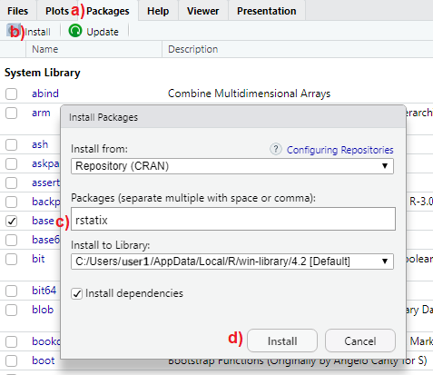

install.packages("rstatix")5 R packages
In this chapter, we explore one of R’s most powerful features: packages. We examine how they expand R’s functionality and provide practical guidance on their installation and use. Special emphasis is placed on the tidyverse package, renowned for its efficient approach to data manipulation, transformation, and visualization
5.1 What are R packages?
5.1.1 Standard (base) R packages
During the installation process, R automatically installs a set of standard (base) packages. These packages are stored in the library folder of the R program and contain essential functions required for R to operate, as well as various statistical and graphical functions for basic data analysis.
5.1.2 Add-on packages
Additional packages can be installed to the User’s R library and loaded into the R session whenever needed for specific purposes. These add-on R packages are created by a worldwide active community of developers and R users, covering a broad range of applications. Most of these packages are available for free and can be downloaded from various online repositories.
A repository is a centralized storage location where software packages, code, and other digital resources are stored, made available for users to access and download, and often allow for contributions. Some of the most popular repositories for R packages, are:
CRAN: Comprehensive R Archive Network(CRAN) is the official R repository.
Github: Github is the most popular repository for open source projects.
Bioconductor: Bioconductor is a topic-specific repository, intended for open source software for bioinformatics.
INFO
Add-on R packages extend the functionality of R by providing additional collections of R functions, sample data, and documentation for the included functions in a well-defined format.
To use an add-on package we need to:
Install the package from a repository. Once we’ve installed a package, we don’t need to install it again unless we want to update it.
Load the package in R session. Add-on packages are not loaded by default when we start an R session in RStudio. Each add-on package needs to be loaded explicitly every time we open RStudio.
For example, among the many add-on packages, this textbook will use the dplyr package for data manipulation and transformation, the ggplot2 package for data visualization and the rstatix package for statistical tests. Below, we demonstrate how to perform these steps using the rstatix package as an example.
5.2 Package installation
5.2.1 Installing packages from CRAN using RStudio IDE
The rstatix package is available in the CRAN repository. To install it, follow the steps illustrated in FIGURE 5.1:
a) In the multifunctional pane of RStudio, activate the “Packages” tab.
b) Click on “Install”.
c) Type rstatix in the box under “Packages” (NOTE: separate multiple package names with space or comma).
d) Click “Install” to begin the installation process.

5.2.2 Installing packages from CRAN using commands
Type the following command into the RStudio Console to install the rstatix package from CRAN, then press Enter:
Note that we must include the quotation marks around the name of the package. To install multiple packages at once, we simply use the install.packages() function as follows:
install.packages(c("rstatix", "dplyr", "ggplot2"))We only need to install a package once. However, to update an installed package to a newer version, we must reinstall it using the same command.
5.2.3 Installing packages from other repositories
Suppose we want to download the development version of the rstatix package from GitHub. The first step is to install and load the devtools package, available on CRAN (see the next section for an explanation of what “load” means). On Windows, if we encounter any errors, we may need to install the Rtools program. It’s important to note that Rtools is not an R package, but rather a separate software tool for building R packages from source.
Then we can use the install_github() function to install the R package from GitHub.
if(!require(devtools)) install.packages("devtools")
library(devtools) # load the devtools package
install_github("kassambara/rstatix") # install devtools package from GitHubIf we need to install an earlier version of a package, the simplest approach is to use the install_version() function from the devtools package to install the desired version.
5.3 Package loading
After installing a package, we need to load it into the current R session using the library() command (note that the quotation marks are not necessary when loading a package). For example, to access all the functions and datasets within the rstatix package, we run the following code in the Console pane:
INFO
There is often confusion between the terms “packages” and “libraries”. In R, “packages” are bundled collections of functions, datasets, and documentation designed for specific tasks. In contrast, “libraries” refer to locations on the filesystem where installed packages are stored. When we use the library() function, R searches these directories (library paths) and loads the specified package or packages into the current session.
A blinking cursor next to the > prompt in the Console indicates that the package, such as rstatix, has been successfully installed and is ready for use. If the installation fails, an error message will be displayed, as shown below:
Error in library(rstatix) : there is no package called ‘rstatix’
In this case, it’s important to carefully review the installation process, ensuring the package name is correct and there are no connectivity issues preventing the download from the repository.
It is important to note that attempting to use a function from rstatix package, such as t_test(), without first loading the package in the R session will result in the following error:
Error in … : could not find function t_test
To resolve this error, we simply need to load the rstatix package into the R session using library() before calling its functions. This ensures that all functions and resources from the package are available in the R environment.
However, in R, it’s possible to access functions from specific packages without loading the entire package into the current R session by using the notation package::function(). For example:
rstatix::t_test()This approach allows us to access the t_test() function from rstatix without loading the entire package. It is especially useful for avoiding namespace conflicts that can occur when multiple packages contain functions with the same names.
5.4 The tidyverse package
Throughout this textbook, we will use the tidyverse package, a comprehensive suite of R packages designed for data manipulation, transformation, and visualization tasks, all of which work together in harmony.
The command install.packages("tidyverse") will install the entire tidyverse collection. This meta-package provides a one‑step shortcut for downloading the following packages:
[1] "broom" "conflicted" "cli" "dbplyr" "dplyr"
[6] "dtplyr" "forcats" "ggplot2" "googledrive" "googlesheets4"
[11] "haven" "hms" "httr" "jsonlite" "lubridate"
[16] "magrittr" "modelr" "pillar" "purrr" "ragg"
[21] "readr" "readxl" "reprex" "rlang" "rstudioapi"
[26] "rvest" "stringr" "tibble" "tidyr" "xml2"
[31] "tidyverse" However, when we load the tidyverse package (version 2.0.0 or later) using the command library(tidyverse), R will load only the nine core packages: dplyr, forcats, ggplot2, lubridate, purrr, readr, stringr, tibble, and tidyr, making them available in the current R session.
Packages outside the core tidyverse collection serve more specialized purposes and are not loaded automatically with the library(tidyverse) command. Therefore, we need to load each of these packages explicitly using the library() function if we wish to use them.
5.5 The here package
When working with Projects in RStudio (Chapter 2), the here package can be extremely helpful. Its main function, here(), constructs file paths relative to the top level of the RStudio project each time it is called. This enables easy navigation through subfolders and files within the project using relative paths.
We can think of paths as directions to files. There are two types of paths: absolute paths and relative paths. For example, suppose Emily and Paul are collaborating on a project and need to read an Excel file named shock_index.xlsx, stored within a “data” folder on their individual computers. They could access the file in RStudio using either an absolute or a relative path, as shown below:
A. Reading data using an absolute path
Emily’s file is located at “C:/emily/project/data/shock_index.xlsx”. In R, she would use the following command:
library(readxl)
dat <- read_excel("C:/emily/project/data/shock_index.xlsx")
Paul’s file, however, is located at “C:/paul/project/data/shock_index.xlsx”, and his R command would be:
library(readxl)
dat <- read_excel("C:/paul/project/data/shock_index.xlsx")Even though Emily and Paul stored their files in a data folder on their “C” drive, the absolute paths differ because of their different usernames.
B. Reading data using a relative path
Using a relative path, both Emily and Paul can run the exact same command:
Alternatively, the file path can be passed as a single string:
The here() function constructs file paths relative to the root of the R project directory. This approach ensures that paths remain consistent across different computer systems, enhancing reproducibility and facilitating code sharing. In this example, the relative path data/shock_index.xlsx remains the same for both users.
The same result can also be achieved without the here package when working within an RStudio project:
library(readxl)
dat <- read_excel("data/shock_index.xlsx")However, using here() is more robust: it ensures that file paths remain consistent relative to the R project root, improving reproducibility and making the code portable across different environments.